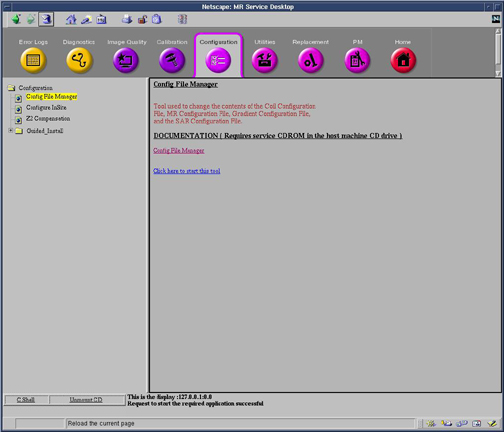

Operating Documentation
Direction 5440000, Rev# 5
Signa HDxt Service Methods
Module Version 1.0, Version Date 5/15/07
Operating Documentation |
| Required Persons | Preliminary Reqs | Procedure | Finalization |
|---|---|---|---|
| 1 | Not Applicable | 10 mins | Not Applicable |
The system configuration values for the Setting on the x-, y-, and z-gradient to obtain 1 gauss/cm (also known as cfxfull, cfyfull, and cfzfull, respectively) should be either all positive, or all negative, depending on which direction the magnetic field is ramped-up. If the magnet was ramped with the B0 field going into the magnet (usual case for 1.0T, 1.5T and 3.0T systems), the cfxfull, cfyfull, and cfzfull values in the configuration file must be positive in order for the geometry to come out right.
| Last Update | 09/28/2005 |
From the Common Service Desktop, Select [Configuration], [Config File Manager ]and launch the tool. See Illustration 1
Illustration 1: Opening Config File Manager From Service Desktop

On the Config File Manager main screen, Click the [Gradient Config File WHOLE ] button on the top.
Verify that all three gradient values are the same sign (all positive or all negative).
When finished editing values Click [Save Changes] and then [Quit] button to exit application.
Click [Yes] in the dialog box question, “Really Quit?”
Click [Gradient Config File Zoom] and repeat Step .
Next, a Save dialog box appears for each configuration file that has changed. To save changes click the [Save] button. To not save changes click the [Do Not Save] button.
Exit Configuration File Manager